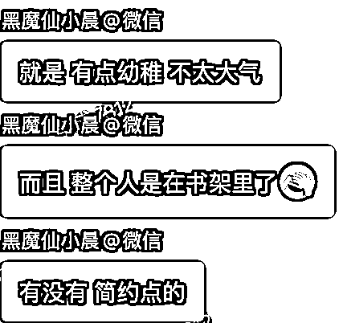
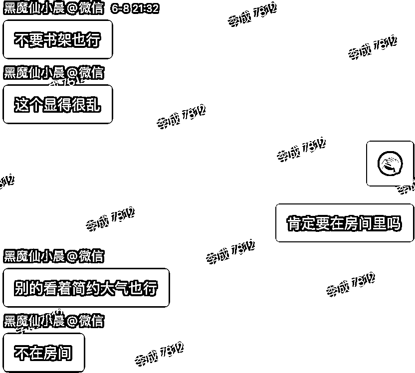
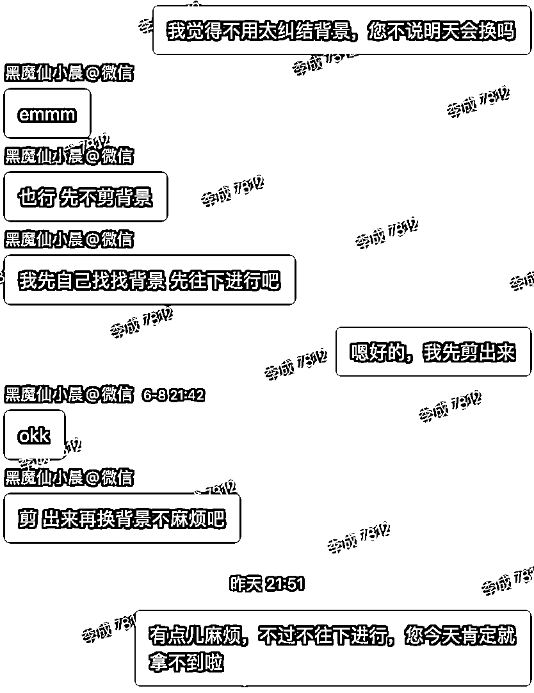
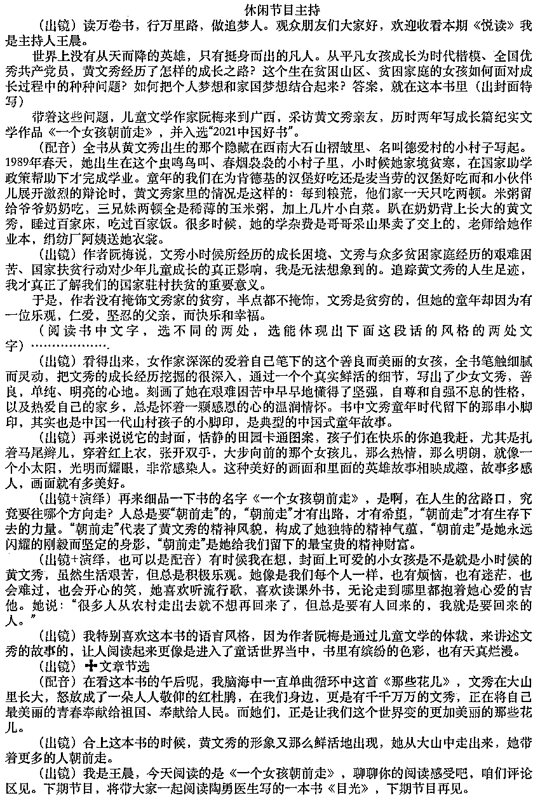
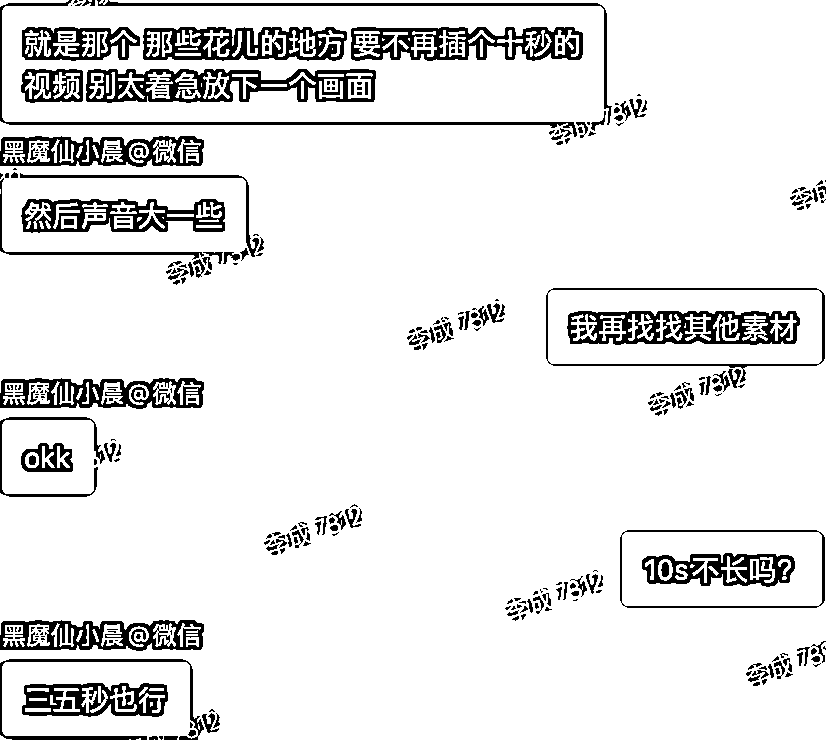
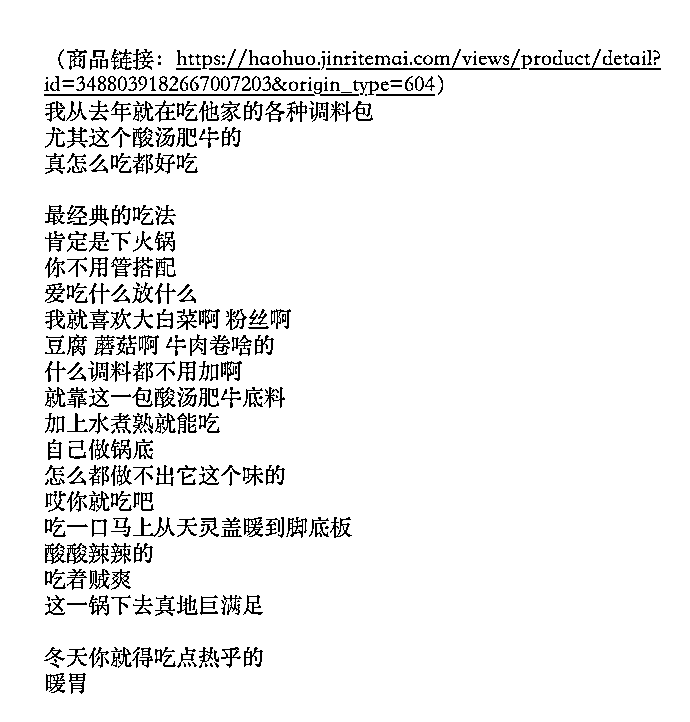

来源：https://uilrwnzy0o.feishu.cn/docx/Rcxrd3qZUo6KvZxIWPtcrEqqnqf
（所以我觉得剪辑新手变现真的没那么难）
小红书上推荐接单渠道的，都说八戒、威客，要么就是boss直聘的兼职，说到自己就说有长期的客户之类的
我就推荐电商平台（淘宝、京东、拼多多）的兼职剪辑：
优点：量大，长期稳定，0投入，正反馈多，快速积攒接单经验与谈单技巧，佣金跟着级别晋升
缺点：单价低
几块到几百不等，初级群单价大多在几十
捡钱单5%、初级单55%、进阶单技巧单40%
你们能解决的就是前两个
初级群：单价低、未必能抢到、人多
高级群：优先派单、单价高
有的是根据接单数量；有的是接单数量+金额
一般是按月，根据填表内容结账：
姓名/银行卡（支付宝）账号/花名/派单客服/订单号/客户账号。。。
加入生财以前我进接单群，天天守着，生怕错过一条捡钱单
加入生财以后批量思维帮我打开了新世界，一猛子扎进好几个群，从被动等单到主动挑单子，从店铺是爷到我是爷，。。。小爷吧
印象里好像用了2天，头一天弄的挺晚，第二天起个大早儿
难点：要求偏高



解决：她实在希望跟原来的素材一样。我让她去要原来的背景，不然该耽误交稿时间了。然后我就继续往下做了

她只有棚拍的口播，其他画面都需要找素材或者制作
解决：找素材不难，就是耗时间。
棚拍是avi格式，当时不能直接导入
解决：转格式。理论上转一次就损耗一次画质，所以我很少转。但其实只要肉眼看不出来，就可以转，况且这单我的目的只是导入不是压缩
一般的扣像剪映就能解决，这一单拍摄专业打光专业，剪映扣的不专业
解决：先后又换了fcpx和pr，pr效果最好最简单
剪映不好控制
解决：fcpx更友好一些
解决：我相信我找到了全网90%她的素材，能用的都用上了，电视台的节目这个可能会牵扯版权问题，所以必须要跟客户说明，这里她知道遮台标就说明懂得都懂，估计也不是在电视台播放。


总结：其实这单跟客户配合的真的挺好的，她说什么效果我直接做，虽然很麻烦但是反馈很快，而且我的建议客户也能理解。
我接单子很少有付完尾款后再改的，一方面我自己对片子有一定要求；另一方面跟客户做好节点沟通。
目标：幼师想给班里老师和孩子编排的歌舞做个视频
要求：无
事情原委：
说实在的这单我是真的早就不想接了，但是店铺的规定就是不能说做不了，所以我用毕生所学把客户所有的疑问全都解决了，最后客户实在找不出理由了不回复了。我估计是觉得嫌贵，但我相信她想要的效果一般新手剪辑做不了，能做也懒得接。最后店铺问怎么回事儿，我说明情况，店铺也没辙，因为谁来都是这样，而且不会有人像我这么耐心。

6段素材将近12分钟
剪辑思路：
实际口述跟稿子多少有点出入，挑表现力好的用。
美食博主剪辑：爆点前置、画面丰富、节奏紧凑、适当调色
分析：博主语速平缓，表现力不浮夸
爆点前置：开头用颜色饱满的美食成品画面，配博主语音，没有太大吸引力。这个画面这个表情还有点儿特点，背后用花字+特效辅助放大爽感
画面丰富：丰富不代表混乱，空镜少的情况，通过花字吸引注意力偷时长
节奏紧凑：短视频表现力的重要程度其实要大于文案，在表现力不足，以及空镜拍摄简单的情况下，强行匹配快节奏更别扭，所以这单的节奏只能在速度上稍稍比之前提一点，只能是跟自己比好一些，不代表市面上的快节奏。
适当调色：一般做到一级调色即可。大多数美食视频就往色泽饱满方向调就行
呼吁行动：如果博主要求可以加个字幕，但是有的人并不喜欢。
建议：如果你想长期合作，博主又是IP方向，可以建议调调表现力，拍摄上有点意思，有点意思的前提还需要个脚本。
这不用分析啥了吧
我想说的是，有的人接单注重效率，同时接两单三单，能交稿即可。因为我最开始是在电视台做剪辑，所以我的剪辑风格是那种为每个片子负责，做一个是一个替客户考虑的接单风格。谁让我盖洛普排名第3的是体谅呢。这要搁我以前的认知，还得给她补上片头片尾呢，还不能看出剪辑点呢。。。
其实新手剪辑对接单感兴趣的真的可以试试，这是个长期可做的副业。初级接单群技术上大多都很简单，但可能稍微麻烦一些，好在做一单就有一单的佣金。如果你希望通过大量正反馈，打牢拍摄剪辑基础，顺便还想赚点钱，就可以来试试。而且随着技能、认知的提升，还可以通过公域平台放大